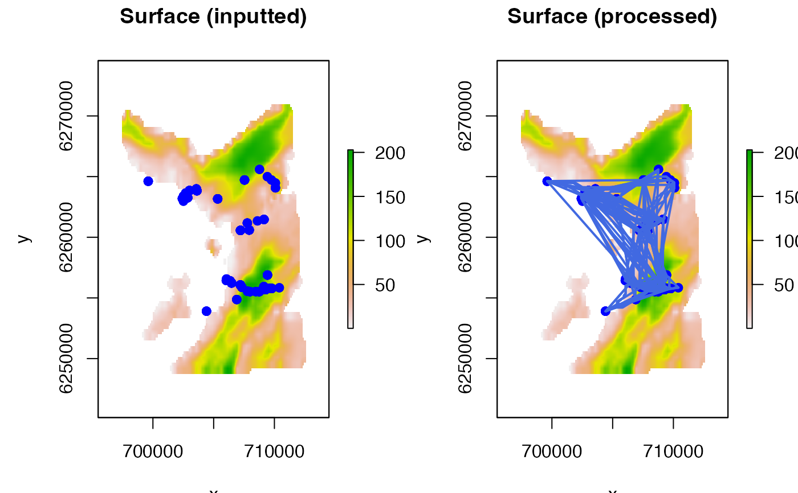

R/get_movement.R
get_mvt_mobility.RdThese functions are designed to provide `ballpark' estimates of individual swimming speeds from (a) acoustic detections at passive acoustic telemetry receivers (get_mvt_mobility_from_acoustics) and archival (depth) time series (get_mvt_mobility_from_archival).
get_mvt_mobility_from_acoustics( data, fct = NULL, moorings, detection_range, calc_distance = c("euclid", "lcp"), bathy = NULL, transmission_interval, step = NULL ) get_mvt_mobility_from_archival(data, fct = NULL)
| data | A dataframe of animal movement time series used to estimate swimming speeds. For |
|---|---|
| fct | (optional) A character variable that defines the name of a column in |
| moorings | In |
| detection_range | In |
| calc_distance | In |
| bathy | In |
| transmission_interval | (optional) In |
| step | (optional) In |
Both functions print a statistical summary of the speed estimates to the console and return a dataframe with observations and the corresponding speed estimates invisibly.
For get_mvt_mobility_from_acoustics, for each speed estimate, the minimum, mean and maximum speeds are printed, in units of m/s and, if specified, m/step. The returned dataframe defines all transitions between receivers and includes the following columns:
fct is the grouping factor (if specified);
receiver_id_1 and receiver_id_2 are the receiver IDs for each transition between receivers;
timestamp_1 and timestamp_2 are the time stamps of detections for each transition between receivers;
time is the duration (s) between timestamp_1 and timestamp_2;
dist_min, dist_avg and dist_max are the estimates for the distance (m) travelled to transition between receivers;
speed_min_ms, speed_avg_ms and speed_min_ms are the corresponding speed (m/s) estimates;
speed_min_mstep, speed_avg_mstep and speed_max_mstep are the corresponding speed estimates, in m per step (if specified);
For get_mvt_mobility_from_archival, the function prints a statistical summary of estimated speeds in m/s and m per `step', where `step' is the duration (s) between sequential depth observations. The function also invisibly returns dataframe of the estimates. This is as inputted, without any fct levels with fewer than two observations and with the following additional columns:
dist is the distance (m) between sequential depth observations;
speed_ms is the speed (m/s) of vertical movement between sequential depth observations;
speed_m_per_step is the speed of vertical movement between sequential depth observations in units of m per step, where `step' is the duration (s) between sequential depth observations;
Speed estimates from passive acoustic telemetry time series are derived from examination of detection patterns via get_mvt_mobility_from_acoustics. For each fct group (e.g., individual), the function identifies sequential detections, which exceeded the maximum transmission interval, at receivers with non-overlapping detection containers (areas within the detection range of each receiver). Assuming that all detections are true, these can only result from movement between receivers. For these movements, transition distances are calculated as Euclidean distances, via pointDistance, or shortest swimming distances, assuming movement over a surface, via lcp_over_surface. Given that detections can arise from movement anywhere within the detection range of a receiver, three distances are calculated: an average distance, from receiver to receiver; a lower-bound distance, between the closest edges of receiver detection containers (i.e., the average distance minus two times the detection range); and an upper-bound distance from the furthest edges of receiver detection ranges (i.e., the average distance plus two times the detection range). These estimates assume a uniform detection ranges over space. For each transition, distances are converted into an average, lower and upper speed (m/s) estimate (termed `speed_avg_ms`, `speed_min_ms` and `speed_max_ms` respectively). If step is supplied, speeds are also expressed per step. On many occasions, individuals will take indirect routes between receivers, resulting in inappropriately low speed estimates. However, if receivers are sufficiently close together such that individuals sometimes effectively transition directly between receivers, the faster speed estimates derived via this method may be quite informative about actual swimming speeds.
Speed estimates from archival time series are derived from examination of changes in depth through time (vertical activity) via get_mvt_mobility_from_archival. For each individual, speed is calculated from the vertical distances (m) between sequential, regular depth (m) observations over time (s). Speeds are also expressed per step, where `step' is the duration (s) between sequential observations.
Edward Lavender
#### Estimate mobility from acoustic data using Euclidean distances ## (A) Define receiver coordinates as SPDF in UTM CRS proj <- sp::CRS(SRS_string = "EPSG:4326") proj_utm <- sp::CRS(SRS_string = "EPSG:32629") moorings <- sp::SpatialPoints(dat_moorings[, c("receiver_long", "receiver_lat")], proj) moorings <- sp::spTransform(moorings, proj_utm) moorings <- sp::SpatialPointsDataFrame(moorings, data.frame(receiver_id = dat_moorings$receiver_id)) ## (B) Implement algorithm using Euclidean distances mob_1 <- get_mvt_mobility_from_acoustics(data = dat_acoustics, fct = "individual_id", moorings = moorings, detection_range = 750, transmission_interval = 120, step = 120)#>#> -------------------------------------- #> Estimates (m/s)----------------------- #> variable min mean max #> 1 speed_min_ms 0 0.07 0.84 #> 2 speed_avg_ms 0 0.14 1.06 #> 3 speed_max_ms 0 0.21 1.50 #> -------------------------------------- #> Estimates (m/step)-------------------- #> variable min mean max #> 1 speed_min_mstep 0.01 8.55 101.26 #> 2 speed_avg_mstep 0.07 17.15 127.58 #> 3 speed_max_mstep 0.11 25.76 180.39 #> --------------------------------------#### Estimate mobility from acoustic data using LCP distances ## (A) Define receiver coordinates # ... (as above) ## (B) Define bathymetry surface for LCP calculations # Requirements: mask land; planar UTM projection; equal resolution; bathy <- raster::raster(ext = raster::extent(dat_gebco), resolution = 50) bathy <- raster::resample(dat_gebco, bathy, method = "bilinear") ## (C) Implement algorithm using LCP distances mob_2 <- get_mvt_mobility_from_acoustics(data = dat_acoustics, fct = "individual_id", moorings = moorings, detection_range = 750, calc_distance = "lcp", bathy = bathy, transmission_interval = 120, step = 120)#> Warning: transition function gives negative values#>#>#>#> -------------------------------------- #> Estimates (m/s)----------------------- #> variable min mean max #> 1 speed_min_ms 0 0.08 0.85 #> 2 speed_avg_ms 0 0.15 1.07 #> 3 speed_max_ms 0 0.22 1.55 #> -------------------------------------- #> Estimates (m/step)-------------------- #> variable min mean max #> 1 speed_min_mstep 0.02 9.30 101.86 #> 2 speed_avg_mstep 0.07 17.86 128.18 #> 3 speed_max_mstep 0.12 26.42 186.15 #> --------------------------------------#### Estimate mobility from archival data # Note the use of 'individual_id' for 'fct' here is only appropriate # ... when there are no breaks in the time series. mob_3 <- get_mvt_mobility_from_archival(dat_archival, fct = "individual_id")#>#> -------------------------------------- #> Estimates (m/s)----------------------- #> variable min mean max #> 1 speed 0 0.01 0.36 #> Estimates (m/step)-------------------- #> variable min mean max #> 1 speed 0 1.09 42.92 #> --------------------------------------